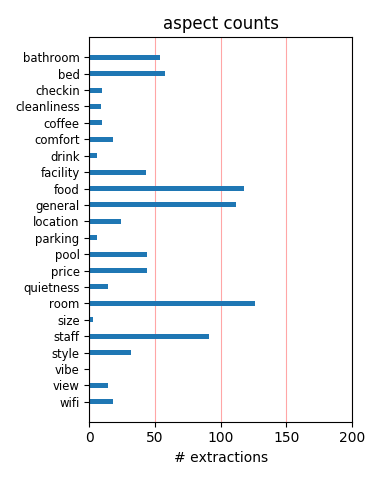
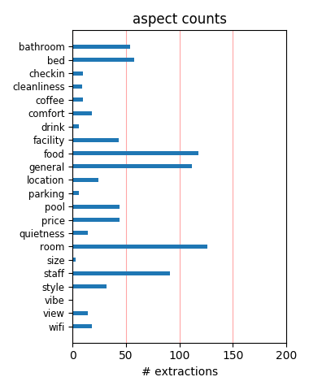

Stayed here last week- Problems as follows: 1) Did not honor their OWN coupon. 2) Charged my card three times-Took 10 days to clear up. 3) Rooms so small- my bathroom at home was bigger than the whole room. 4) Staff is clueless. Stay away at all costs.
this was a very nice motel has swimming pools hot tubs and arcade. the only thing they could use there is a restaurant would make it alot better. and there new beds are awsome they are very comfortable. the room looks so relaxing when you walk in to it.
The room was clean and the beds were good. Every one was friendly and very helpful. The breakfast was wonderful. The staff worked very hard to keep up with the big crowd in the middle of the week. It was spring break. Will stay here again when we return.
Will definately return when in the Branson area. The room was very large and comfortable, clean, quiet, great location. Room service was very willing to help. Rates were very affordable. Full buffet breakfast was outstanding! Two swimming pools for the kids.
My wife and I stayed at The Stone Castle Hotel & Conference Center in Branson, MO from Wednesday thru Sunday and had a very good time. The breakfast in the mornings was very good. I would recommend this to every one. They also have family suites that are great.
We always stay at the Stone Castle. The rooms are always nice and clean and the location is nice since it sits right on the Yellow Route. It is very easy to access all the attractions and the strip. Since our first stay here we have never looked at any other hotel.
The hotel was very pleasant. I found it very comfortable and relaxing. The atmosphere was nice and friendly. The beds were comfortable and a good size. It was rather quiet too considering there was several groups staying there the same weekend that our church stayed.
We go to Branson at least 3 times a year and we have stayed at many of the hotels and this one had the most comfortable beds and a great hot breakfast. The TV's could be bigger but overall a great value. The staff was very friendly and the pool area was always clean.
Hotel was an excellent choice for our stay. Rooms were great, staff was very friendly and helpful. Can't thank Rachael enough for all her help in making our family reunion one of best we have had. My family thoroughly enjoyed their stay. Will definitely stay here again.
2d time to stay at this hotel. Best value in Branson. $45/nt. 2, count 'em 2, separate indoor pools and hot tubs! No worry about pools full of kids. Rooms are fine, nothing fancy. Beds could be softer. Like the "off the Strip" location. Would recommend and would stay again.
Everything was great---Front desk people were friendly and was always willing to help in anyway...Rooms were clean and fresh..Breakfast was good and good music to listen too....I would rate this hotel and one of the best Branson has to offer. We will stay with them on our next visit.
We stayed there the weekend of the summer cruise. The rooms were very clean and the beds were very comfortable. We ate breakfast the first day and it was very good. Had no problems with the staff and maid service was also good. Very cold air which my husband likes. Will stay there again.
The Settle Inn Branson was an excellent choice. The man that took the reservation was very helpful. When arriving to the motel, both ladies at the office were friendly. The facility was clean. We have stayed at this location on two other occassions and plan to return in the next time we go to Branson.
This hotel was probably great at one time. It needs a lot of tender care to restore it back to it's original character. The pool area was in terrible shape. The carpet was old and the building had a musty smell to it. The staff was friendly. Too many more hotels in Branson to stay here again. Go on down the road.
This is definitely not a luxury hotel, but for the price, it's a great deal. My husband especially liked the breakfast that was included. He appreciated the staff that continuously kept everything filled and fresh. Eggs, sausage, ham, biscuits and gravy plus hot and cold cereals were served. We will definetly return!
We were so plesed with the outside look of the hotel and just as plesed with our rooms. They were clean and the furnishing were very nice. The staff was very nice and very helped us with any questions. The pools were very clean and the breakfast was great. We plan on staying in this hotel on our next trip to Branson.
We were part of a three day conference for about 40 couples. The rooms were clean, the beds were comfortable, the staff was professional and friendly and the conference rooms were perfect for our group. A good hot breakfast was included and the hotel was convenient to other Branson attractions. I would highly recommend it!
This hotel is outdated. The walls are paper thin. You can hear water running and people next door talking. The rooms are very poorly lit. The bathrooms are minute. I complained about the dogs in the unit and they did move us to the building which doesn't allow pets, which is the only good thing I have to say about the place.
We enjoyed our stay at the Settle Inn/Stone Castle in Branson, MO. We were wanting a relaxing romantic getaway and they were awesome! The room was nicely appointed, clean, and the bed was very comfortable. It was great having breakfast on site. The hotel is centrally located in Branson. We will make use of it again, I am sure.
Stone Castle is very convenient to the main strip in Branson, but is also accessible to the relief routes that avoid traffic The rooms were very clean and the beds were super comfortable. The free breakfast buffet in the morning was delicious and had a good variety. I highly doubt there is a better room for the price in Branson!
We were drawn to the stone castle hotel for the indoor pool for our weekend get a way. Turned out we were very plesently surprised at what we received. A very nice room, lovely decorations, and amazingly comfortable beds. The pool area was clean and comfortable with a nice hot tub as well. We will deffinatly stay here again soon.
We found the staff to be extremely nice and accomodating. Every request was fulfilled like we were the owner. The room was neet, clean, and more than adequate for our needs. The continental breakfast was wonderful and well organized. We slept well with absolutely no sound from the outside. Check in and check out were fast and easy.
This hotel was very comfortable, with a full buffet breakfast. Staff were very helpful. Other reviews state that the rooms are small, but I found they were just a little more narrow than other properties. Location is perfect: off the busy 76 highway, but handy via backroads to all the shows and restaurants. Would definitely go back.
From check in to check out, everything was great. The price was right and our room was first class. The only bad thing I have to say is my Wife loved the bed in our room and now that we are back home (St. Louis, MO), it looks like I will be buying a new bed. The breakfast (free & hot) was perfect and the staff was very accommodating.
We had an awesome stay at this hotel. The employees were outstanding and the service was great. The rooms were very nice and beds slept awesome. With having a Silver Dollar City season pass the price was very afforadable. Planning on staying again in July, September and possibly December. The hotel has more than one pool that is convenient.
My sister and I travel to Branson several times a year and always try different places to stay that are convenient,clean, and budget friendly. We also prefer inside corridors. We found the Stone Castle Hotel last weekend and loved it! The staff was great, the breakfast music show was fun and we would love to stay there next time we go to Branson! It was great!
the hotel was very artistic, the workmanship of the building was just beautiful, i think it was the largest hotel in Branson. the characteristic of the furniture and art in the room was excellent. wonderful in door pool and hot tub/spa. great complimentary breakfast. our lodging experience at the settle inn was just great, i would recommend this hotel to everyone.
Stayed five nights--checked out this morning, April 27, 2012. Friendly staff, especially the breakfast staff. Housekeeping was adequate. Room was priced right. Nice TV; free WiFi. Bathroom was tiny. Beds were heavenly! Most of the events, exhibits, shows, and restaurants were just a short ride from the hotel. We would certainly stay here again when visiting Branson.
Hotel had a great breakfast. The jets on the hot tub were broken and sprayed water in your face if you tried to use them, one pool was ice cold while the other was fine. my wife found some food on the floor from the previous occupants while trying to plug in the computer. The theme was very cute with knite statues. Parking was a little crouded but they were very busy.
Stayed 2 nights, room was very small and was damp and musty. We complained about the air being damp and a strong odor. The staff who was very friendly tried cleaning the AC unit, however it didn't help. On day 2, we found a bug in bed, checked out. The room was like being in a cave with a bad smell. We were refunded 2 nights of our stay. No complaints on the staff, they were helpfull and nice.
My husband and I really enjoyed staying at the Stone Castle Hotel. The service was excelent, and the staff was very friendly. We stayed in a standard room with a king bed. The room was very clean and decorated very nicely. There was all the standards for a nice hotel room, there was even a coffee maker. The location was just off the strip, which we liked. The price was great. We would stay there again.
We really enjoyed our stay again in Branson. This is our third stay at the Stone Castle. The staff is friendly and willing to give that extra effort to make your stay stress-free. The rooms are very reasonable, clean and relaxing. But, most of all The Stone Castle is only minutes away from the best shows and attractions with plenty of parking. The breakfast is great and the pool and hot-tub an added plus.
I just spent 4 days in Branson on business and found the Stone Castle to be both a convienient location and a great value with a staff that amied to please. Their hot breakfast was included and was excellent with eggs, sauage, biscuits and gravey, and french toast as well as cereal and youart. Not a typical contenintal breakfast. Rooms are clean, and the staff helped me do what I needed to. I will be back.
This is a sprawling place but it is beginning to show its age. The room was clean but worn the AC/Heat was very noisy and the towels really needed to be replaced. Again we had a pricing issue we had a reservation conformation for one price and the clerk that checked us in would not honor it AT ALL. When we checked out a real manager was on duty and did adjust the room rate to match what the confirmation showed.
The service was great! The staff was super friendly and very helpful. The room was beautiful and the beds were some of the most comfortable beds I had ever slept in. My teenage boy and girl were with us and really enjoyed the pools and the hot tubs. When it was time to go the kids begged to stay longer. It is conviently located close to Walmart and many stores that we commonly shop. I give this Hotel the highest available.
This place isn't fancy. Its very much a budget based place without many frills. But if the price is right - why complain? Pluses: Good service, inexpensive, friendly, everything works, nice bath fixtures Negatives: the continental breakfast is kind of sad, but the hot breakfast isn't any better. Canned peaches made up the fruit area and the eggs were very mysterious. The water is hot, the sheets are good enough - but don't expect the Ritz.
Excellent guest service. We met our children and grandchildren at the Hotel for Memorial day weekend. Are rooms were close together, very family friendly Hotel.The beds were very comfortable. Rooms and halls were clean and neat. The breakfast experience was GREAT, the live music show was fun and entertaining. The hot tubs and pool areas were very nice. All in all a wonderful experience. We are looking forward to our next visit to Stone Castle.
Our room was fine except a little dark. We were on the first floor so we had to keep the drapes shut. The room was nice and clean and for the price it was better than expected for us. The staff was great but the breakfast was not so great but is was good enough. Swimming area was clean and fun and everything you want to see is near this hotel. For the price we paid it was just fine! I would reccomend it to anyone looking for a little budget relief. Nice stay!
The room smelled musty when we first walked in. Later found large water spot with mildew on bathroom ceiling. When we notified front desk, they just said "oh" . We asked for another room. Hotel needs updating. Rooms are dark and dingy (black carpet?) and small. You literally had to turn around to get into the bathroom. We wanted to upgrade to a larger room, but only standard rooms are pet friendly. With all the choices in Branson, we would not stay here again.
Check in process was very pleasant, room was nice and CLEAN!! We have stayed there before and loved it every time. They have an excellent continental breakfast. Employees were friendly and very helpful. Pillows were even good, which is usually not the case at most hotels (from some of my previous experiences at other hotels). The view was nice and once again we were extremely pleased wth our stay there!! Will definitely reserve there when I visit Branson anytime.
We have stayed in several hotels in Branson but this is one that we would definatly return to. The hotel in all is very clean and the standard rooms are very spacious. The free breakfast was very good and they have entertainment while you eat. We made our own waffles which I like. We had family come back to the hotel and we sat out side at the gazzebo then moved in to one of the sitting rooms on the second floor.. The front desk personel were very helpful and we will definatly return
We LOVED it here! They have onsite laundry and SEVERAL pools. Nice view and great prices. Esp if you have the Entertainment Book www.entertainment.com. You get HALF off if you have the card from the book. We went there for a timeshare thing and we ended up really loving it there and have had our grown kids/grandkids stay there, as well. They even have an arcade onsite! It's a great place to stay when you come to Branson. Oh and the Dockers Restaurant is next door and it's excellent, too!
The staff was friendly and very quick at fixing a problem. Are tv was not working when we checked in but they changed it as we called which was at 11pm. The rooms were clean, bathroom is extremely small and crowded, barely enough room to turn around. Pools were clean but old looking. Hot tub was hot first night but cold second night. Breakfast was pretty good, good entertainment with breakfast. Downfall no mini fridge or microwave. Family had an enjoyable time. Would proabely stay again.
We stayed this last week for 2 days while we were in Branson. I have to say that I did pretty good on this hotel. It was the best one we stayed on our trip. The breakfast was excellent. Everyone said how much they liked the assortment. The room was nice and clean and the hotel staff was wonderful. And, the rate was awesome. The coffee does need to be a little bit stronger but that's all. Thank You, Stone Castle for a wonderful stay and if we're ever out that way again, you'll definitely be seeing us back. :)
We have stayed at the Stone Castle Hotel twice now and have been very pleased both times. The rooms are nice and the location is close enough to access everything we want to do in Branson, but off the strip so we can get to it quickly. The pool and hot tub are open until 1 am which worked great for us when we got in late. The staff have always been extremely friendly. The kids love the big breakfast with eggs, waffles, b&g, donuts, etc. and we were lucky enough to see a breakfast show during one of our stays.
We were celebrating our 22nd anniversary. We had reservations for a double standard room. When we arrived, they offered to bump us up to one of their theme rooms because they needed our room. Without hesitation we jumped on the opportunity. We had the "Pirates of the Carribean Room". It was wonderful! We loved the decor and the large jacuzzi tub and private balcony. The staff was so nice and took very good care of us. The breakfast was good and the breakfast entertainment was a nice touch. We highly recommend this hotel.
this is the best hotel i have ever stayed in. the rooms are so clean. the beds are so fresh and smell good.so close to sleeping in my own beds. very nice. the bathrooms are so clean. and i love that you have everything in the room you need. ironing board,iron and so forth. the indoor pools .... wow. love them. the kids love staying there. the breakfast is grand. the staff and mangement are great. the are willing to help you . great location. want to thank them all. we stay there all the time. david cope dave4792004@yahoo.com
We loved the Stone Castle. It's in a very quiet part of Branson, the rooms are super clean, the staff is very helpful and they have a great hot breakfast. The most important thing to me is the honesty of the staff. When we checked out, I left my purse in the drawer of the entertainment center and didn't realize until I'd gotten somewhere that I needed a credit card. I called the hotel and the maid had, already, cleaned the room and brought the purse to the front desk. This will be the place we stay, from now on, when we go to Branson.
at the stone castle hotel it is highly a must to see and stay at,from its three castles and two indoor heated pools and two spas it also is equipt with a family arcade,gift shop,laundry and a hot deliciuos breakfast each morning and if thats not enough it also has for your convience high speed internet and a computer for your use in the lobby.the rooms are newly remolded with pillow top beds,table and chairs,restroom etc needs,ironing board and iron,and a blow dryer.the tvs are meduim size and cable tv.this hotel is right smack in the heart of branson.
We've been here before in a jacuzzi room, which was very nice, and we enjoyed our stay this time just as much as the last. Great indoor pools-not crowded at all. Great location, accessable but not too much traffic. Quiet and clean! Beds agreeable not too firm and not too soft. No probs like other reviewer. We had a travel mag. and used the coupons. We come to Branson a lot and have stayed in several hotels like Clairion and Comfort Inn. We like this one best. Good price with coupon from MWTravelBuddy.com . Good breakfast and a/c good. Coming back in a week and bringing family.
We got in very fast the lady at the front desk was very nice. We had the Jewel of the Nile it was very nice we loved it. We went to the first pool room the hot tub was not hot at all it was very cold and it was blowing out cold water, the pool was alittle bit cold. We then went to the 2nd pool room the hot tub was hot and the pool was still kinda cold. Later on that night we went back to the 1st pool room the pool was warm and the hot tub was warm we pushed the bubble button it was still blowing out cold water. The breakfast was very good. We will go back again we did have alot of fun.
My wife and I travel to Branson several times a year. We have stayed in area hotels in the past but now prefer to stay at Stone Castle. The staff is very accomodating and friendly. The rooms are well maintained, clean, and spacious. We had a first floor room close to the pool area during our last stay. There were several ball teams staying here as well as a young women's conference. We were not bothered by any outside noise from the hallway as the kids and adults made their way to the pool. The breakfast is great! The staff keeps everything full and clean. We recommend Stone Castle highly!!
We stayed here recently and really liked the location. It was central to Branson's activities. The staff was very accomodating with our requests and were very friendly. The beds were very comfortable. On the downside, the rooms & common areas were quite outdated and in need of some repair. Our room smelled damp and mildewy and the carpet felt damp. The indoor pool/jacuzzi could really use some updating, ventilation, and bigger towels, but water was clean. Overall, we couldn't beat the price for the location and helpfulness of the staff, but I expect our rooms to be cleaner and everything well-stocked & in working order.
Check is was smooth, no problems at all. Front desk staff was friendly. We had a 3rd floor room, which was nice. The hotel wasn't busy, so finding a good parking spot was easy. However, when we went into the building....the musty odor was horrible, the lobby area was humid as if the air conditioning wasn't on, the elevator smelled musty. Opening the door, our room was musty and it smelled horrible. The beds were comfortable and clean, the bathroom was very small but clean. I noticed that there weren't any extra outlets, we had to unplug the clock so I could plug in my laptop. Management should really address the musty smell of the hotel.
We stayed with a group recently and all had a good time....the group had experienced problems unrelated to the hotel but when we got there the treatment and service we received was wonderful.....we were made to feel right at home......I believe Joe was the gentleman who greeted us and was very kind and professional.....Maryann (I think that was her name) in the breakfast room was an absolute angel.....she went out of her way to make everyone feel special........this is an excellent choice for groups-affordable......receptive to needs.......Also the in charge cleaning lady was very professional and friendly. all these things are assets......
This was our 3rd stay at the Stone Castle Hotel. It is a good value for the money. Nothing fancy, just a good clean place to stay. It has 2 swimming pools, which was good because if one was really full, the other one usually wasn't. Our room was clean. The bathroom was squeeky clean. The lighting in the main part was a little on the dark side, but we weren't in our room very much, so this wasn't an issue. It did make it hard to read of an evening though. Breakfast was good and the breakfast room was very clean. The attendant worked very hard at keeping the tables clean and around the serving dishes picked up. We'll definitely stay here again.
Hotel had NO INTERNET SERVICE ENTIRE WEEK. MOST OF WEEK CABLE & PHONES WERE DOWN, except for inhouse calling. Stay for convention...place was filthy....nothing was clean. breakfast? never saw it...oh unless they mean the old fruit on the table with the juice. The staff couldn't get any dumber. The only business this place to seems to have is the tour buses the elderly travelers take. All 3 bldgs are old and need to be updated.. not with paint either...i mean gutted & refinished completely. The bathroom is so small & dirty you couldn't stand to touch anything in it. I had lysol to clean before we touched anything. The beds were very very nasty.
The staff at the Settle Inn are very friendly and accomodating any time day or night. The rooms are very clean and have plenty of room with the most comfortable beds for a good night's sleep. We like having coffee in our room and the convenience of having an iron and ironing board. They have a wonderful breakfast buffet with entertainment in the mornings (at no extra cost). The location is great, distant enough to be quiet and close enough to enjoy all the activities offered in Branson. When away from home, the most important thing for us is having a comfortable bed to sleep in and to have the comforts of home. We get all that at the Settle Inn.
The Settle Inn was very kid friendly. The suite was big enough for the kids to have space to play and not be on top of us. Their favorite part was the breakfast show, the entertainer included them at intermission and they went home and told everyone they were IN the show! The extended pool hours are great, you can swim before you start your day and after you return from sightseeing. The washer and dryer were ann added plus, especially when traveling with 4 kids. The microwave and fridge came in very handy for the kids special snacks. The beds were comfy and the sheets were soft, which is hard to find in some hotels. We will definitley go back again.
The standard rooms are cramped with very poor lighting. I'm sure a suite would have been much better, but I didn't want to pay the extra amount. The room was a great value. For the location and breakfast, it was priced well. My room was dusty, which made me think that maybe it wasn't too clean. Since the lighting was so bad, I couldn't really tell how clean it actually was. Most of the staff was very nice and accommodating. There seemed to be some clueless stares when I would ask a question, but usually they figured it out. The TV's need to be replaced/upgraded and the channel selection was not great. However, if you're going to Branson to see Branson, this is a perfectly adequate hotel.
This is our home away from home. We absolutely love this place! We stay here everytime we come to Branson. Centrally located right off "the main strip," The Stone Castle offers convenience, luxury, and a cozy atmosphere for the entire family. All rooms are clean and nonsmoking. There is a convenient onsight restaurant. The medieval theme brings a sense of adventure like being in a castle overlooking the lights of Branson. While the mom shops till she drops, the little girls and I always enjoy the huge indoor pool and hot tub no matter what the seasons brings outside. We highly recommend this place to anyone who has children or to the couple who wants to rekindle the fire in their marriage. Wonderful place!
We spent one night in this hotel because we needed an extra night in Branson at the last minute. The hotel had a very musty smell as soon as you entered. There are no connecting rooms at this hotel which I specifically asked for when I made the reservation and was not told they just didn't have them. The bathroom was seriously smaller than any cruise ship bathroom that I have ever been in. You had to sit sideways on the toilet just to close the door and when you did sit on the toilet the "right" way, the toilet paper holder was poking you in the side. The hotel just did not seem clean at all. The outside does look pretty nice but the rooms inside do not. Also, neither of the pools were working while we were there.
My husband, two boys, and I stayed at the Stone Castle and loved it! We did not make reservations due to the fact we are always looking for great deals and try to stay at townhouses or cabins. We were very tired and decided to find a place close by the strip instead of venturing out to find a nice little cabin. We are so glad we did! We stayed in a family suite that had three beds! Our boys got to sleep by themselves! The rooms were neat, clean, and roomy! We had a fridge, ironing board, and even two televisions...no fighting over the show to watch at night. The price was unbeatable, the staff was helpful, and the breakfast (Which was included) was fantastic! We have found the best place in Branson to stay every year!
I have read the negative reviews and frankly am quite surprised by them. We also got a reduced rate through another booking event, but I was already intrigued with the idea of the themed rooms. We stayed in the one with the stone arch and all the knight themes. Yes, it was an older hotel and room, and it did have a slight musty smell, but the charm overwhelmed everything. There was a gorgeous painting on the wall, the lovely arch made me feel like a real Geneviere of Camelot. There were all sorts of artifacts in the room from helmets to weapons and the waterfall jacuzzi was the most spectacular and ingenious piece. For a couple, this was a truly magical experience and I could not wait to get back to my room each night.
We stayed at this place for 5 awful nights for a conference. The a/c was bad during a heat wave. Free breakfast; that's using the term breakfast loosely. The entire place looked dark, dingy and medieval so they're keeping with the whole castle theme, very dungeon-like. The rooms were dirty, small and the t.v. was tiny, though housed in a large armoire. What?! They do not have room service, restaurant or bar. The ATM didn't even work. The staff didn't seem interested in providing service. I would never stay there again and, in fact, would tell others to steer clear. One good thing about the place was the bed. It was really comfortable!! The fire alarms were all disabled throughout the entire hotel. It should be condemned.
Great Great GREAT!!!! The price was very good and they had made improvements in the short 5 weeks between trips. The first time the hot tub was a little dirty and the breakfast not so great. Still a nice stay though. By our 2nd trip only a few weeks later they have added a full breakfast and the pools and hot tubs were clean! I have a 3 year old daughter who doesn't want to stay any other place than "Shrek's Castle" She thinks the Knight on the horse on the far end looks like Shrek. :) We will be coming back again! I have been going to branson at least 3 times a year since I was 7 and this is one of the best places we have stayed! I took my parents with me the last time and they will now be staying here when they go back.
Our stay at the Settle Inn newly renamed to Stone Castle Hotel & Conference Center was great. Our room was clean, functional and quiet. We have 2 young boys and they loved the swimming pools (both of them). We had a regular room and not a suite and found that we had adiquate room for the 4 of us. Breakfast was good and always had a good selection. The folks at the front desk had an answer for every question. The hotel is located just off the road on the yellow route so we did not have any traffic noise. There was plenty of well-lit parking even with a conference going on in the hotel. We were close to lots of mini golf and restaurants. All roads to 76 were easily accessed. My husband and I were very pleased and will be back.
We stayed here recently and really liked the location. It was central to Branson's activities. The staff was very accomodating with our requests and were very friendly. The beds were very comfortable. On the downside, the rooms & common areas were quite outdated and in need of some repair. Our room smelled damp or smelled of animal uran. i requesded a room w/o the oder, they were more than ready to accomidate my repuest, and gave us a theam room for $50.00 a night more than we were paying. they did reduce it to $98.00 difference in priginal price. we were locked in this property because of the package we bought through the tracel company. We would never go back to this property again, because of the condition of the property, and the bad oders.
Stayed at the Stone Castle Hotel for a Silver Dollar City getaway. Booked on the phone and received very courteous assistance. They offer a good discount for Silver Dollar City season ticket holders. Our room was clean as well as the hallways. We had a standard room but they do offer theme suites. Beds were comfortable and breakfast is included. The breakfast offered cereal, doughnuts, toast, eggs, biscuits and gravy, fresh waffles, fruit, juices, milk and coffee. They even have entertainment during breakfast. Stone Castle is conveniently located on the yellow route for easy accessibility to Branson as well as Silver Dollar City. I highly recommend Stone Castle Hotel. We will be staying here again when we return to Branson this summer and fall.
This hotel met and surpassed our expectations. The rooms were average hotel size but very nice. The beds not your average "hotel" beds. The bedding was very nice (large throw pillows and upscale comforters). Very comfortable. You can see the new renovation and it is very nice. The TV was a bit small for my husband but fine for me. (I dont go on vacation to sit in the hotel and watch TV) The rooms were very clean. (Expecially the bathroom). VERY important! They offered breakfast and it was much more than your average cereal and donuts. They had biscuts and gravy, waffle stations, cereal, bagels, toast, oatmeal, donuts, juice, milk, and coffee. The room they serve it in is huge. There was always enough seating. They also offered entertainment. You can not go wrong with this hotel!
We enjoyed our stay here very much - did not like the wooden floors because early in the mornings, we could hear creaks as the people above us moved around. It woke us up. The room was nice and well decorated. Flat screen TV with lots of channels, but no fridge or microwave. Breakfast was on our floor and smelled the hallway up a little, so much so that we weren't interested in eating it. They could definitely use some new bed linens, but the beds were nice and comfy and housekeeping was nice, too. For the great deal we got on this place, we were well pleased. Not a four star hotel, but definitely not a bad place to stay! My son enjoyed the indoor pool and game room. Pool was VERY cold, though, so he couldn't stay in for very long periods of time. I recommend it, just don't expect luxury - expect average and clean.
When my wife and I were trying to find a hotel to stay in for a weekend family vacation, we came across this hotel. After looking at the website, we were cautiously optimistic that what we saw was a reality rather than some internet scam. So we called, booked our room, and the next day hit the road to Branson. All the way during the drive, we both joked that we'd booked a stay at a dump, but once we arrived, we were pleasantly surprised to find an actual hotel, with actual people. When we saw our room, our smiles deepened. Very warm, cozy, and comfortable rooms. Breakfast was warm and fresh, the people were all very friendly. The receptionist on duty even allowed us to look at one of their famous themed rooms, and that solidified our view that we would definitely be back! And truthfully, we can't wait to get back to our new hidden gem!
The first thing I noticed is the hallways were very dark even in daytime. My room was very small, again very poor lighting. The bathroom door hits the toilet when you close it. The sink is very narrow. I was told the place had been remodeled, I guess they meant new paint which is all dark colors and new carpet. A large armoire had a very small tv. The staff likes to park their cars very close to all entry ways even at the expense of making it difficult to get into the buildings. After 10pm at night a staff member was running a vacuum cleaner in the hallway, not just one spot, the entire hallway! 2 people in my group had door locks that would not work properly on their rooms. The hotel said no other rooms were available to switch and a locksmith was not available to fix the locks. My friends had to prop a chair under the doorknob to be secure. Cold breakfast! Look elsewhere!!
We stayed her for 4 nights over the Thanksgiving Holiday and very pretty uncomfortable the entire time. Rooms were nice in decor but there was dirt under the beds, TV was tiny, wireless internet was horrible, room was very small, pool and hot tub were tiny and full of rowdy kids with no one enforcing the rules of no jumping or horseplay, could not enjoy it at all. "DELUXE" continental breakfast was not bad if you could get near it, crowd were backed up across the parking lot and we finally gave up and went elsewhere. Dog was barking in room across the hall all day and night, one of us stepped in dog feces in the parking lot and tracked it into the room :( A group of ill guests vomited just outside the entry door, massive amounts, when we called to ask that it be cleaned up due to health hazards front desk staff was rude! It was a very dissapointing place to stay ~ NEVER again
I recently took a quick weekend getaway to Branson with my mom and little girl. We found this delightful hotel called The Stone Castle (formerly known as Settle Inn). It's right off the main drag and strikingly nestled into the Ozark hillside. It's a lovely facility that gives off a castle-like feeling, complete with medieval knight right there at the entrance to greet you. The landscape is lovely and the buildings are well kept and clean. The room was quite comfortable and affordable. Our package included Belgian waffles and biscuits and gravy the next morning with a breathtaking view out the widespread windows in the dining room of the Ozark mountains on a crisp sunny morning. This place was just great - perfect for smaller kids. The Stone Castle will surely be our hotel of choice every time we visit Branson. I'd give it 5 out of 5 stars in its price range. Glad I found it!!!
we booked this hotel for the indoor swimming pool. We traveled mid week so the hotel was on the quiet side. One thing we like to do is check in and hit the pool. We are in our fifties so we sure don't act out of line. We went and checked out the pool. The pool room is very warm and it appeared we would be in there all by ourselves. Great ! So we get changed grab a few beers and head back. That is when we noticed the sign-no beverages or food allowed in pool room. As i stated it was very warm in there, i am not sure how they would expect anyone to stay in there without even a soda or water to drink. My husband inquired at the desk if they were firm on these rules. The women said that maybe she might allow a plastic bottle of soda or water but for sure no beer. Needless to say i'm sure we won't return. The hotel seemed fine otherwise. Next time we hit Branson we will be sure to inquire about pool rules ahead of time.
My family stayed overnight the Stone Castle Hotel last week. We have stayed here in the past so it is a familiar place and our children have fond memories staying here when they were toddlers. The hotel is vast with lots of rooms. On this particular stay, we had two rooms with two queen beds. The rooms had adequate space and decorated with a medieval theme. Everything was clean and worked properly. This place is perfect for the family as the rates are favorable (especially if you have a Entertainment Card). The breakfast buffet they provide has hot food (eggs, sausage, french toast sticks, biscuits and gravy) along with your typical hotel breakfast food. There are two swimming pools and both were busy when we were there. Each pool has a hot tub, but one was closed for maintenance. The hallways and rooms could be lit brighter and it is an older hotel. The exterior is very well maintained. Overall, it was a nice clean place to stay.
I love staying at The Stone Castle when I am in Branson. It is the hotel we always stay at. It has a great location. It is not far off of highway 76. It is very close to the outlet malls, Branson Landing, White Water, and not too far from Silver Dollar City. There are a couple of nice restaurants or fast food joints very near, along with a couple of mini-golf courses. The rooms are always very clean and have a coffee pot, blow dryer, and cable tv. There are a couple of swimming pools and hot tubs available that are open early in the morning to very late at night. In the morning you can enjoy a free breakfast with many choices. They have scrambled eggs, biscuits and gravy, waffles, hot and cold cereal, and even donuts! There is also a variety of beverages. All of the staff at The Stone Castle are always very friendly and helpful if you have any questions about anything. It is no wonder The Stone Castle is the only place I want to stay when I am in Branson!
This past weekend was the 3rd time for holding my Crazy Cropper Scrapbook Retreats at Stone Castle. My group of 60+ ladies converge on the hotel for 4 days and nights and we kind of just take over the place! Between Joe and Marlene, they make sure we are treated like queens! Every requests is handled quickly and efficiently. I have to give a shout out for Mary Ann and Tammy, who make our dining experiences, which is 3 times a day for 4 days, absolutely amazing! And the maintenance crew (please put their names in here for me), bend over backwards, setting up our crop room, hauling out our massive amounts of trash and making sure our electrical needs are met. The group just raves over the super comfy beds and overall cleanliness of everything. We can find absolutely no reason to change, so you all are just stuck with us! Thanks to everyone who is involved in making us all feel right at home. See you in the Fall, 2012! Janis Purves Crazy Cropper Scrapbook Retreats
My wife and I were booked into the Settle Inn though a time share promotion company. The Settle Inn has three separate buildings and we were given a room in the oldest of the three. The hotel needs updating and cleaning. The room had one double bed and was extremely small. The smallness was accentuated by the large armoire, which made the room seem even smaller. The TV in the armoire was 19”. You could barely walk between the armoire and the bed. The bathroom was extremely small, with an older bath/shower and toilet. The door could hardly clear the toilet. The room smelled musty. The Settle Inn was nice about switching us to a larger room with two double beds. However, it too had a dirty feel to it. The continental breakfast is served only in the first of the three buildings, which meant walking a distance. We eventually complained to the time share promotion company, who moved us to a better motel. I’m not sure what the regular rate is for the Settle Inn, but I hope it is very low.
I was in town for a function at the hotel, which is why i stayed there. Its definitely an older hotel and seemed to be recently freshened up a bit. The rooms were clean and had nice furnishings. The TV was an old picture tube TV...which i don't see much of any more. The free breakfast was not bad....and we had live entertainment as well. The hotel is located just off the main road going through the Branson attractions but was joined by many other hotels on the same road. The staff was helpful and polite. As I mentioned, I stayed there because of a function there. If I was going to Branson for any other reason I would probably stay at a more up to date chain hotel. Branson is a nice town, nice folks, temp not bad for summer time, and family friendly. Its alot like Gatlinburg, TN, just a bit smaller. We drove from the Kansas City airport, which was almost 4 hours. I would recommend flying into Springfield instead. Its about a 1 hour drive from there. But overall its a nice town and I had a nice stay at the hotel
Nothing to write home about. It was a comfortable room but was not very clean. Heard several people at front desk complaining of hair in their bathtub upon arrival and general complaints about their room, our bathtub was never cleaned while we were there. Bedspreads were messed up when we arrived. Very dark rooms and could hear every sound from the room next to us. Breakfast was ok but poorly stocked, there were only ~10 rooms rented while we were there so no excuse for overcrowded. This is just an older hotel that they have tried to fixed up but too many tale tale signs of aging. We stayed in one of the regular rooms and toured the themed rooms ($50.00) more a night, I'm glad we did not pay extra for a room that was the same as ours except for murals on the walls and an old whirlpool tub, would never recommend a themed room. If you get the room free like we did I guess it would be worth it, I'm glad we did not pay for it (time share presentation). It was certainly worth free. I would not return unless it was at no cost.
I was very leery staying at this hotel after all reviewing a lot of negative reviews. However, a last minute decision to go to Branson brought us here. The hotel is nice from the exterior. Typical Branson - if you're expecting an W Hotel, Vegas-esq spread, or even a nice Marriott Renaissance - you might keep looking. However, it's neat and tidy. The location is great, its off the Yellow Route and accessible to anywhere in town. Yes, the reviews were accurate on the interior. It's a bit dated, but clean. Yes, the TV in our room was about the size of my iPad. No worries, though - we didn't go to watch the TV. The owners are in the process of updating rooms, so I think this is a known issue. However, the room was very acceptable, as were the common area and the pools. Breakfast was good and the usual hot items. The service was great. We were traveling with an infant (yes, we're those people) and they were more than happy to accomodate our special requests at our late check in. All in all, it was a nice trip. We would likely stay again for another quick trip.
The room was too small for four adults. Pictures on the internet showed better rooms. The bathroom was so small you could barely shut the door and turn around to shower, etc. The hotel reservation desk was OK when we check in but when we checked out it was a different story. We had a message on our phone saying we had a package at the desk. They could not find anything??????? So who knows where it is. I left a note to be sent to Branson Vacationland that we needed to turn in before we left showing we had taken advantage of the presentation we were assigned (tried to leave it with them directly but they were closed as we left early a.m) so the checkout person said,reluectantly, that they could send it when they sent their next billing to BV. I asked that she run a copy for me, sign and date it so I had something to followup with in the event they did not do it. She grabbed a pen and scribbled on the copy and "shoved" it at me. Her supervisor was sitting in the next room, saw and hear everything, and never came to the counter to see what was going on. I would never stay there again, nor recommend it to anyone.
Run away from this place as fast as you can. We stayed in the 3rd building on the 2nd floor. The bedding felt nasty and we found hair. The beds were poorly made. The bathroom is TINY! The entire hotel smells old and musty. We checked in on a monday and paid for 2 days we went back on tuesday to go ahead and pay for another night. The lady at the front desk took our credit card and then the phone rang she held up her thumbs and mouthed " Your good to go" So we left the next day we went swimming and about 3:30 someone knocked on the door. Before I could even get up to answer it a guy was opening our door and very hatefully said " You need to see the front desk about staying another night" I said 'Ok" He said you need to go RIGHT NOW. My husband went to the front desk we thought maybe there was a issue with our card because we had paid cash before. They were very rude! Even though my husband tried to explain to them what had happened. NAsty hotel!!!! Nasty staff. Too many nicer places to stay in Branson for the same price. UGH! The breakfast was very bland and the music show wasn't that great either. Do not stay in the third building.
Upon pulling up to the hotel I was pleased with the appearance, that is where my pleasure ended! Once inside the hotel it smelled so musty I opened the window in my room to discover it didn't even lock (we had a main floor room, so window locks are a MUST) Husband went to the front desk to complain, maintenance man was able to fix it after at least 45 minute wait. We headed to the pool.....yuck! There were dead bugs floating in the water, a hole in the wall under the window, a piece of wood holding a slide glass door open, chains on other doors that said "this entrance is in need of repairs, sorry for any inconvenience" or something to that affect. The pool was VERY cold! Pulled the blankets back on the bed was surprised to see there was a duvet that nobody uses because you know they don't wash them, the middle blanket was all ripped (on both beds), the sheets looked like they needed washed, anytime you move at all the bed continues to bounce for a while after. Told hotel staff we would only be staying that night instead of the reserved two nights, they were ok with it and didn't charge me to cancel. I recommend this hotel do some serious updates!!!
My husband and I had a room reserved at Settle Inn for a 3 night stay through a vacation package offer. We requested a king sized bed which they said they would do, but upon arrival, we were told none were available. Since this was right after Christmas there weren't many people staying there and half the property was closed off. We were told they only had 8 king sized beds total and they were all taken. Then when we got to the room it was so small, and the bathroom had MOLD growing around the tile area. I called the front desk and was told the maid would come clean the room plus it had a musty smell. The next day we left to see some sites, and when we returned the bathroom was still the same......MOLD still there.....and the bed was half made. I had written a note to the maid to please spray bleach on the shower and tub, but this did not happen. The room was filthy and disgusting! Needless to say, we left after 2 nights and came home. We did not enjoy this vacation at all, and it was a total waste of time and money to stay here. My advice is to STAY AWAY FROM THIS MOTEL! There are others around the area that hopefully are cleaner and respect their guests.
We booked our stay through travelocity, and received an excellent rate of about fifty dollars a night. Overall, our group was very pleased with the hotel. We booked three rooms, and we were all right in the same area. Check in was easy, as was check out. Breakfast was very good; I am a relatively picky eater and I don't understand why other reviews complain about the breakfast, especially given the cost of this hotel. The waffles were great, as were the donuts. Not too many healthy options, but they did have oatmeal. The breakfast show on both days was great if you like country music, but a bit on the loud side. The rooms were very clean, but ours did have a bit of a musty smell that went away after we turned on the air. The rooms are on the small side, but that didn't matter to us as we weren't in there very much. The beds were fine, and the decor was very nice. The bathroom was very, very tiny. When you opened the door it came within one inch or so of the toilet, but again, that was not a problem for us, just something to be aware of. Overall, we were very pleased with our stay at the Stone Castle and would definitely stay there again, especiall for the great rate that we got!
We booked a regular king room for 5 nites and left after the 2d nite. would have left after the first nite but would have had to pay the second night anyway. The hotel is overall alright and the theme rooms or suites may be roomier but the regular rooms are very cramped. we had a king bed which was pretty comfortable . there was one very small, round table and 2 small, straight back chairs. two nite stands and the armoir for the tv and that was it for the furniture. you could barely sqeeze between the foot of the bed and the armoir. the bathroom was very small with a tub/shower and comode. the sink was in the ;main room which wasn't very well designed. The hotel had some nice decor and was probably v ery nice when it was newer, but needs to be updated and new carpet. The breakfast was very good and there was lots of room for every\one to sit and eat. they had some pretty good entertainment each morning for breakfast. We got good rates on our room because they sent us a coupon by email and if you don't mind being cramped, it was a good bargain. We just wanted more room and a bed with a pillow top mattress. We won't stay here again unless they offer the theme rooms and suites at a fair price.
I had the distinction of going through Veronica at Branson Tourism and she was pleasant and concerned with my booking a room. First of all I had to pay in advance. We arrived in July 2011 and the following concerns the motel. First of all I will say the good thing as the bed was comfortable and clean. That's about it. The air conditioning in the buildings did not work properly. It was hot and humid. The ice machines broke down and the third floor did not have and ice machine. The conference room was adequate but sultry and hot. The water was shut off for about four hours and that messed up the pools chorine and they were shut down for one night. There was no restaurant, bar and the ATM did not work. The hotel staff was not helpful but the cleaning staff was very good. Overall, I would not stay at this motel again for the price. By the way, the smoke detectors did not work in our building. The bathrooms were so small you had to stand behind the door to close it. Seems to me the constructors of this building were not playing with a full deck. I don't mind paying more money for a nice place to stay but when the motel is in the shape of the Stone Castle Motel, I would not reccommend it to anyone. I give this motel one star.
We stayed in the Settle Inn (now Stone Castle Hotel and Conference Center) for a family reunion in July. Our experience was just "okay". We stayed in a room which I assume was supposed to be a suite, however it was really just adjoining rooms. One room was very warm. We called the front desk to report that our air conditioning was not working. To the hotel's credit, we had a visit from maintenance very quickly. However, we were told that one of the rooms had an older air conditioning unit and that it just wouldn't get as cool as the other. Unfortunately, my husband and I were stuck in the warmer room. We also had a great deal of difficulty with the wireless internet. My husband was on a working vacation and needed constant contact with the office back home as he was in the middle of a business transaction. We never did get our computer on the wireless network even after taking our laptop to the front desk. The front desk person said they knew nothing about it and couldn't help us. My husband ended up standing by the window and picking up wireless from a nearby business. It was extremely frustrating. However, the rooms were clean enough, breakfast was fairly good and we enjoyed the location off the main strip. All in all...just okay.
We just got back from a 5 day stay in Branson. Our first two nights were spent at The Stone Castle. The positive things about the hotel: Pretty landscaping, the beds are comfortable, the rooms are cool - air conditioner works well, the eating area for the continental breakfast is very large and roomy, great location - walking distance to many attractions and quiet area. The rooms are decorated nicely and the hotel manager is energetic. On the negative side: We were greeted by hotel staff that weren't familiar with which credit cards they accepted. We used an American Express and were told our card was declined, not a good feeling when starting a vacation. I had to call American Express to find out that the hotel did not have a contract to do business with American Express. Next, the first room that was assigned to us smelled like moth balls, we were given another room which was much better. The rooms seem small, tight fit for a family of 4. The pools were very cloudy, could not see the bottom of the pool (which is not deep). My son found a long hair in his pancake. I used the iron and when I pressed the steam button rusty water sprayed all over the shirt I was ironing. Very small TV. There are better hotels for the money, but this one has potential.
My family and I have been to Branson many times, on the average twice a year for the last 30 years. Needless to say, we have stayed at almost every hotel/motel in Branson. Some of the places are a whole lot better than others and the Settle Inn is the best of all. At first when I saw this big, magnificent hoteI that looked like a castle I thought that it would be way too much to stay there. My Son was very young at the time and wanted to stay there as he liked knights and horses and they have statues of them at the entrance and inside the building, We decided to humor ourselves and stop by and see how much a room would be and we found that it was quite affordable and had many extras to offer. They give a nice brakfast, sometimes with entertainment and a pool and hot tub that is open from 6 am to 1 am. The kids loved this and so do we as we can use these after shows or before we start our day. We have also rented a theme room and that was really fun. Also, it is very safe there with security cameras and entrances from the inside. Sometimes we get coupons in the travel books and can save money. This truly is our favorite place to stay in Branson for both the parents and the kids. The Settle Inn will only enhance your vacation and I think it will become your family's favorite place to stay too,
Our vacation was from October 22 -26 and I made our reservation by calling them a week in advance to reserve rooms for my wife and I and my parents. Upon arrival the girl at the front desk (Joy) said it only showed one of the two rooms reserved for us. I had to go out to my laptop and bring it in to show her both conformations for our rooms and she finally found it. Then she discovers that they made a mistake and reserved one room for the 26-30. She seemed completely lost at her job and yet she was the same girl I had talked to on the phone when I reserved the room. She was trying to pass the buck and yet I knew that it was indeed Joy that I had talked to when I reserved the rooms. At this stage they said they only had another room with a single queen available and it was in a different building than the other room. What is the point of vacationing together if you're in completely different buildings? I had to cancel the rooms and then frantically search for another Hotel with an indoor pool in Branson on a Friday night. It was a complete nightmare after a long drive. Thank goodness we found The Cascade Motel and they had a family suite for us and a far Superior place to stay for about the same price. I highly recommend the Cascade. Beware of The Stome Castle and the desk girl named Joy, they are a joke.
The highlight of the hotel was the desk staff. The room was clean too. The problems we saw were - hotel is older and needs help. The wireless internet did not work and we were basically told - "Sorry" and they couldn't do anything about it. The AC did not work well and kept the room just tolerably cool. The bathroom door locks when you turn the lock left and then it locks again if you turn it very far to the right. It was a constant job to make sure you didn't lock yourself out. We had a balcony that had a door that wouldn't lock. In fact, it had a hole where some kind of lock used to be. The cable tv was horrible. We got bad reception and approx 15 channels - most of which were news or informational. After a long hot day, sometimes you want to lay in a cool room and watch a little TV. No Disney, no movies, no CMT, .... At the end of our hallway there was a window that was open with a screen that was popped loose to leave an opening that dropped 3 stories to the ground....safe? Maybe not important to others, but I look forward to literature like the Branson travel guide that is available in most hotel rooms. I like to read the information and go through the coupons. There was nothing in our rooms at all to help plan the trip. We stayed one night in this hotel and moved to another for the remainder of our stay. The other hotel was less expensive and much better.
We had our family reunion at this hotel. And as one would expect there were a million details that required the help of the staff at this hotel. My travel agent had prepared "packets" for each family with the itinerary and what there was do in Branson. I picked up those packets and brought them to the front desk and asked them when each person checked in please give them each a packet. They did not give one person a packet, the Front Desk staff was downright snarky, as if I was asking them to do to much. The hotel messed up the Cocktail Hour suite for both nights, and when I called to complain they did NOTHING to make it right, it was so clear that they could actually care less that I was unhappy. As for the hotel itself, it is old and outdated. The bathroom in my room was old. The blanket on the bed looked to be about 20 years old and pilling and I didn't feel comfortable using it. There are 3 different buildings in which one can stay, I found it confusing and the building we were in was the a long walk to the Front desk and where breakfast was. I could not more unhappy about this experience and will never go there again. Branson itself is a pretty cool place, lots to do for music fans, outdoor fans, etc. We went horse back riding at Sheppard Hills, and that was a wonderful experience. We had an hour long ride for $25 you can't beat that. The places we had dinner "Montana Mikes" and " Florentina's" were both really good food and great service. Thankfully I have a terrific family who handled these mistakes with grace and understanding.
The family and I stayed two nights at the newly renovated Stone Castle Hotel in Branson. Check in was great. They actually let us check in early which was nice because it was very hot during our time in Branson and we were ready to get in out of the heat and relax for awhile. By request, we were placed in one of the three buildings that had a pool. Two buildings have indoor pools whereas the main building has the conference room/ breakfast area. The room was very nice. You could definitly tell that they put some time and money into the renovation. The beds were comfy and the a/c worked great. Since it was so hot during our stay, in the 100's, the indoor pool was very inviting. My oldest son and I spent a great amount of time in the pool. When he wasn't in the pool, he was in the gameroom which is right next to the pool. Breakfast consisted of waffles, donuts, scrambled eggs, biscuits and gravy, and juice. There were two ladies that set up the breakfast and they both were so nice each morning. The best part of the breakfast was the live entertainment. I had never stayed at a hotel in branson where they provide morning entertainment. The music was provided by Cowboy Tucker and Mr. Yeary. They are part of a show in the Branson area. They are funny and have wonderful voices. Mr. Yeary approached me and we talked about my youngest son who was sitting with me at breakfast. On the last day, three of the five daughters of the Warnock family came in and sang a song and gave out discount coupons for their show located at the Branson Mall. If you have time, check them out. A very talented family. Love Branson. Loved the Settle Inn/Stone Castle. Look forward to staying there again!!!
This was by far the worst place I have ever attempted to stay! The staff was very helpful but could not find an unstained pilliow in the entire complex! Out of 7 pillows all but one was stained and even Josh the young man who brought us the pillows and sheet said he would let the GM know about the status of these nasty pillows! Upon booking this hotel with ReserveBranson.com I checked tripadvisor and most reviews said good things.! Were these people blind? or they didnt check the sheets and blankets! There were some bad reviews too. I called and ensured our reservation and the lady told me it was confirmed! I asked her if the hotel was clean and she assured me it was. Well room 506 was not clean and the hallway stunk and as we entered into the room the floor was wet from the sink leaking. The sheet on one of the beds had copper colored stains near the top and the pillows were stained really bad. Staff was nice and sent pillows to our room three times and sheets once. One of the pillows I checked just before my 8 year old daughter was about to put her head down on it and it appeared to be molded. I have pictures on my phone and will post after I transferr them to my computer. We were only there for like three hours. At 11pm I contacted the Holiday Inn Express on Green Mountian Drive and Josh gave me a great rate to help compensate the poor quality of the Stone Castle. I had to take my wife, 6 week old daughter, and my 8 year old daughter out at 11 pm to take them to a clean place for them to sleep! I have called reservebranson and am awaiting their call back. I will comment again when they refund my money for the stained castle Inn.....I mean Stone Castle Inn. DON'T STAY AT STONE CASTLE
I booked this with travelocity, around 50 per night. I called the hotel before I booked it, making sure I could get a room with wi-fi and pet free, they said no problem. The check in was fast. We got to the room, looked good, nice furnishings. I was unable to get online. I called the front desk, they said they would have the IT person reset the router. I waited, waited, waited. Still nothing. I then took my laptop to the front desk. The clerk got me online. Went back to my room, nothing. I went back down to front desk. They offered us another room, I went up to the new room with my laptop to verify it worked, That room had some sort of problem above the a/c unit that looked like it had water damage. I went back down to front desk, was given a third room to try. I went back upstairs, wi-fi worked, room looked ok. It was kinda moldy around the bathtub. We then moved all of our stuff to this 3rd room. After traveling for many hours and being wore out and tired, we just wanted to be settled in. The exterior doors had problems locking. We were a bit concerned about security in the hotel. I researched reviews on many hotels before our trip, I was really hopeful that this would meet our standards. But it didn't. Only in the price. Also, it did not have a fridge. My back was killing me from all of the walking and moving our stuff and I wanted to heat up my microwave heating pad, I had to walk down to the front desk, they unlocked a banquet room, the only microwave was in there. That was inconvenient. The tv was older, did not have many channels at all, mainly a news channel, tbs, a few others, No HBO or premium channels. The staff was friendly. In summary, I would not stay here again, I would have chosen The Radisson.
My wife and I stayed at the The Stone Castle Hotel & Conference Center (formerly the Settle Inn) for 2 nights, June 3 and 4. I made reservations a few days before with Amber. She was very pleasant and we talked about some of the negative remarks that have been made. As the hotel has just went thru an extensive remodel, we decided to give it a try and hope for the best (and glad we did!) On arrival, Alissa checked us in and gave a detailed briefing on the facilities. The room we stayed in on was very clean and the beds were more comfortable than our own at home. We had a coffeemaker in the room but did not use it as there was a small coffee/tea bar just down the hall. There was an iron and ironing board but we did not use them, but it was a nice idea for those having conventions, etc. An excellent breakfast buffet (coffee, orange juice, donuts, 2 large containers of scrambled eggs, same with biscuits and same with 2 sausage gravy containers…as one went close to empty, it was removed and refilled. In addition there were 2 make-your-own waffle machines. They had a Dining area person assigned who stayed right there all the time, not someone from the desk as happens in some places. We ate a good breakfast both mornings, while being entertained by 2 great local performers, Denny Yeary and “Marshall” Tucker….boy could they sing! NOTE: The Dining area had about 15 large round tables, with 8-10 chairs each…a lot of room and a lot of seating. Between shows, we enjoyed an indoor pool and the hot tub. The pool had a enough towels available so you did not have to use your ones from your room. There is a pool in each of the two adjacent buildings. (The main building has the dining area, the other two has the pools.) Location just off Green Mountain Drive tends to be quite...good. The entire complex is non-smoking, which is a real plus for us…..Bottom Line….would we go back…You Bet! .